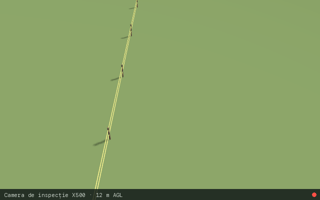

Autonomous fence inspection
simulated
- A PX4 Holybro X500 takes off, flies the 414 m fence loop at 12 m and lands, in about 2.5 minutes.
- It finds the broken wire, the fallen post and the branch on the wire, plus animals outside the paddock.
- A report with a map and the GPS position of every finding is written after each flight.